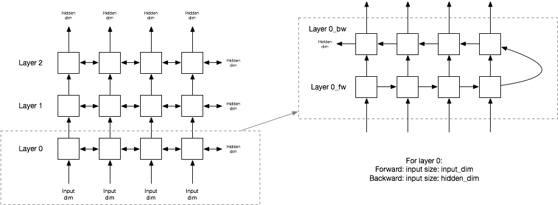

通常的双向RNN并不是如下设置，这个是之前的一个理解。需要更新
如果是用双向RNN，则TRT/cuDNN中引入的层数是实际层数的两倍。

其保存方式是：[layerNum, dir, gates]
代码上来看就是
const int dirMult = (direction_ == RNNDirection:kUNIDIRECTION) ? 1 : 2;
int wOffset = 0;
int bOffset = 0;
// Iterate each RNN layer
for (int li = 0; li < layerNum; ++li) {
const int wCols = (li==0) ? inputSize : (hiddenSize * dirMult);
// Uni or bi-dir layers in each RNN layer
for (int di = 0; di < dirMult; ++di) {
const int v2Layer = (li * dirMult) + di;
// W and R params
for (int i = 0; i< 2; ++i){
const bool isW = (i==0);
const int wNum = (isW ? wCols : hiddenSize_) * hiddenSize;
const int bNum = hiddenSize;
for (RNNGateType g : gates) {
const Weights w = getWeightAtOffset(imW, wOffset, wNum);
const GateParams wp{v2Layer, g, isW, w};
wParams.push_back(wp);
const Weights b = getWeightAtOffset(imB, bOffset, bNum);
const GateParams bp{v2Layer, g, isW, b};
bParams.push_back(bp);
}
wOffset += wNum;
bOffset += bNum;
}
}
}